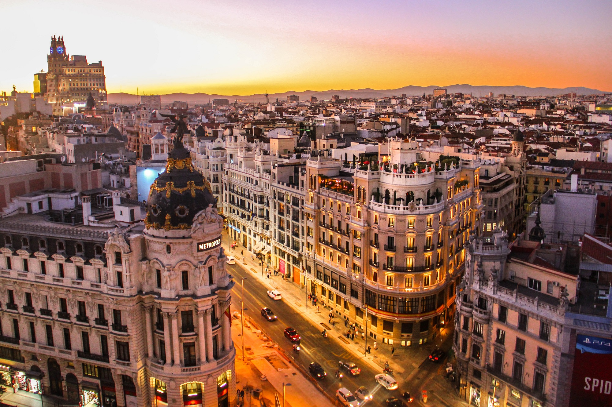
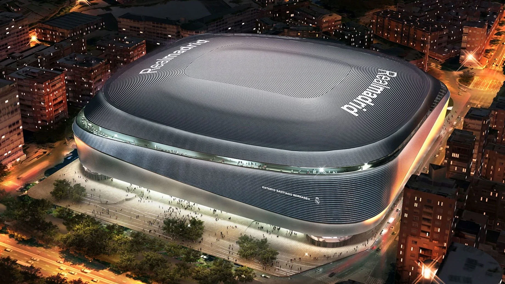
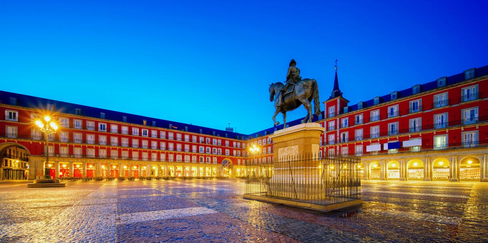
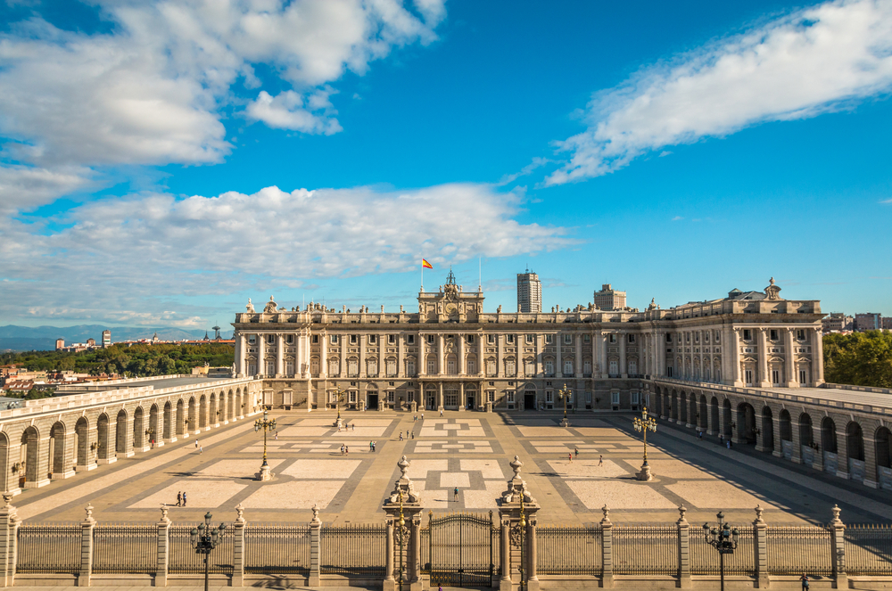

Madryt (hiszp. Madrid) – stolica i największe miasto Hiszpanii, położone w środkowej części kraju, na Wyżynie Kastylijskiej, u podnóża Sierra de Guadarrama, nad rzeką Manzanares. Ma powierzchnię 604,45 km² i liczbę ludności 3 266 126[1] (2019). Znajduje się w regionie autonomicznym Comunidad de Madrid, [2] który ma powierzchnię 8022 km² i liczbę ludności ok. 6,7 mln (2020). Jest to drugie co do wielkości miasto Unii Europejskiej (po Berlinie) oraz drugi co do wielkości monocentryczny obszar miejski w UE (po Paryżu)[3]. Madryt jest centrum administracyjnym państwa: jest siedzibą rządu, parlamentu, ministerstw, agencji i innych przedstawicielstw międzynarodowych, jak i też oficjalną rezydencją króla Hiszpanii[4]. Na płaszczyźnie ekonomicznej Madryt jest czwartym najbogatszym miastem w Europie (po Londynie, Paryżu i Moskwie) oraz drugim w ramach UE[5]. Jest głównym centrum finansowym i biznesowym Hiszpanii[6]. Swoje siedziby mają tu m.in. trzecia co do wielkości giełda w Europie – Bolsa de Madrid, Latibex, przeznaczona wyłącznie dla papierów wartościowych emitentów z Ameryki Łacińskiej oraz kilkanaście korporacji zaliczanych do największych na świecie, jak: Banco Santander, Banco Bilbao Vizcaya Argentaria, Telefónica, Repsol, Iberia LAE, Endesa[w innych językach] czy FCC[w innych językach]. Madryt jest także siedzibą Światowej Organizacji Turystyki, należącej do ONZ, ponadto jest siedzibą sekretariatu generalnego Organizacji Państw Iberoamerykańskich. Mieszczą się tutaj także instytucje związane z regulacją języka hiszpańskiego, m.in.: Akademia Języka Hiszpańskiego czy Królewska Akademia Hiszpańska. Miasto jest wpływowym ośrodkiem kulturalnym. Tutejsze Muzeum Prado, Muzeum Narodowe Centrum Sztuki Królowej Zofii czy Muzeum Thyssen-Bornemisza, znajdują się w gronie najczęściej odwiedzanych muzeów na świecie[7]. W badaniach dotyczących jakości życia, Madryt uplasował się na 16 miejscu wśród miast świata w 2015 roku według magazynu Monocle[8] i na 51 miejscu wśród miast świata w 2017 roku według Mercer[9].

Pierwszą z wielu przebudowań przeprowadzono już w 1954, powiększając pojemność do 120 tysięcy, zaś w maju 1957 rozegrano pierwszy mecz przy sztucznym oświetleniu; przeciwnikiem Realu Madryt był Sport Club do Recife. Wówczas stadion nosił już nazwę Estadio Santiago Bernabéu – przemianowanie na cześć prezesa Santiago Bernabéu nastąpiło 4 stycznia 1955. Pierwszy mecz reprezentacji Hiszpanii na Estadio Bernabéu odbył się w 1964 roku – jej przeciwnikiem była wówczas drużyna Związku Radzieckiego. Kolejną dużą przebudowę przeprowadzono w latach 80. – na rozgrywane w Hiszpanii Mistrzostwa Świata 1982; kierowali nią Manuel Salinas oraz Luis i Rafael Alemany, synowie twórcy stadionu. Pojemność obiektu została ograniczona do 90800 miejsc. Ostatnie miejsca stojące, ze względu na regulacje UEFA, zlikwidowano na przełomie lat 1998/1999, natomiast dwie ostatnie przebudowy to w 2007 roku utworzony dach nad trybuną (wschodnią), oraz utworzone w 2011 roku 900 nowych miejsc, położonych w sektorze Primer Anfiteatro od ulicy Ojca Damiana, który zadebiutował podczas spotkania Realu z FC Barceloną, pierwszym meczu Superpucharu Hiszpanii w 2011 roku. 12 grudnia 2004 w 88. minucie gry mecz Realu z Realem Sociedad został przerwany. Powodem był telefon od człowieka powołującego się na ETA, który powiedział, że na Santiago Bernabéu o 21:00 wybuchnie bomba[2]. W ciągu dziesięciu minut przeprowadzono ewakuację kibiców. Alarm okazał się fałszywy. Mecz dokończono 5 stycznia 2005 roku. 31 stycznia 2014 Florentino Perez ogłosił, że GMP Architekten, L35 i Ribas wygrali międzynarodowy konkurs na projekt przebudowy Santiago Bernabéu. Przebudowa ma zająć 3 lata[3]. Od 26 marca 2020 roku stał się magazynem materiałów sanitarnych w związku z pandemią COVID-19[4]. W listopadzie 2025 roku stadion przemianowano na „Bernabéu“[5].

W średniowieczu był zwykłym targowiskiem usytuowanym poza murami miasta, nazywano je Plaza de Arrabal (dzielnica biedy, slumsy). W 1561 Filip II przeniósł do Madrytu stolicę i postanowił stworzyć na bazie istniejącego targowiska, miejsce reprezentacyjne przeznaczone dla spotkań publicznych i obchodzonych uroczystości. Zaangażował w tym celu architekta Eskurialu Juana de Herrerę oraz Francisca de Morę. Zarządzone przez niego zmiany były kontynuowane przez Filipa III (którego pomnik od XIX w. stoi na placu). Jedynym zachowanym elementem projektu de Herrery jest Casa de la Carnicería, która w momencie powstania była siedzibą gildii rzeźników. W 1617 do przebudowy Plaza Mayor został zatrudniony architekt królewski Juan Gómez de Mora, pod którego kierunkiem ukończono adaptację placu w 1619. Został przyjęty kształt prostokąta o rozmiarach 120 × 90 m, otoczonego pięciokondygnacyjnymi budynkami. Mieszkało tam wówczas ok. 3 tysiące ludzi, co powodowało niespotykane zagęszczenie. Trzykrotnie spłonęły one w pożarach (1631, 1670 i 1790) i ostatecznie plac uzyskał dzisiejszą postać w roku 1790. Pracami przy odbudowie kierował Juan de Villanueva, który ujednolicił fasady i dodał łuki przy wejściach na plac. On też zadecydował o obniżeniu zabudowy z czterech do trzech pięter oraz zabudowania narożników, po jego śmierci prace kontynuowali jego uczniowie Antonio López Aguadoi i Kustodia Moreno. Z okolicznymi ulicami plac łączy dziewięć bram, z których najsłynniejszą jest Arco de Cuchilleros (Łuk Nożowników)[2]. Przeznaczeniem placu miało być organizowanie publicznych uroczystości i świąt, w związku z tym Plaza de Mayor był świadkiem wielu ważnych wydarzeń. Odbywały się tu koronacje królów, celebrowano uroczystości, ogłaszano ważne informacje. Wystawiano tu sztuki teatralne, odbywały się tu corridy, a nawet egzekucje skazańców. Pierwszą uroczystością była celebracja ku czci św. Izydora, patrona miasta, która odbyła się dwa lata po jego beatyfikacji, tj. w 1620[3]. 21 października 1621 na placu został ścięty Rodrigo Calderón, hrabia Oliva. W 1848 na placu ustawiono pomnik konny Filipa III, jego autorami są Juan de Bolonia i Pietro Tacca, powstał w 1616 i wcześniej znajdował się w Casa de Campo. Był darem Wielkiego Księcia Florencji Kosmy Medyceusza, przenosiny na obecne miejsce były decyzją królowej Izabeli II[4]. W 1880 przeprowadzono remont Casa de la Panadería według projektu Joaquína Maríi de la Vega, kolejny w 1935 przeprowadził Fernando García Mercadal. Największa współczesna przebudowa placu miała miejsce po 1960, zlikwidowano linię tramwajową, odcięto płytę placu od ruchu ulicznego, pod nią wybudowano parking, odnowiono elewacje kamienic, a także zmieniono pokrycie dachów. W 1992 na elewacji Casa de la Panadería umieszczono kontrowersyjne freski Carlosa Franco przedstawiające postacie mitologiczne. Do najważniejszych obiektów należą Casa de la Panadería i Casa de la Carnicería oraz pomnik Filipa III. Obecnie plac jest atrakcją turystyczną, wszystkie budynki zostały odrestaurowane, w ich oficynach mieszczą się kawiarnie i restauracje. W każdą niedzielę na placu odbywa się targ kolekcjonerski, na którym można zdobyć stare hiszpańskie znaczki, monety, czasopisma, zdjęcia i widokówki[1].

Pałac Królewski w Madrycie (hiszp. Palacio Real de Madrid lub Palacio de Oriente) – zbudowany w XVIII wieku przez Filipa V Burbona. Zaprojektowany w stylu baroku przez włoskiego architekta Filippo Juvarę, który jednak umarł przed rozpoczęciem prac budowlanych. Wnętrza i otoczenie są utrzymane w stylu rokoko i klasycystycznym. Jest oficjalną rezydencją króla Hiszpanii, chociaż król Jan Karol I ani jego rodzina nie mieszkał w pałacu, a w mniejszym Palacio de la Zarzuela na przedmieściach Madrytu. Ma 2800 pomieszczeń, część z nich jest udostępniona dla turystów. Stary Alkazar, siedziba Habsburgów spłonął 24 grudnia 1734 r. Nowa siedziba, życzeniem monarchów, miała być monumentalną budowlą wzorowaną na paryskim Luwrze. Pierwotny projekt Juvary okazał się zdaniem władców zbyt kosztowny. Juvara zmarł w 1736 r., nie mógł zatem przeprojektować siedziby. Zgodnie z życzeniem Juvary, prace nad zadaniem powierzono Sacchettiemu, który znacznie (do ok. 1/4) zredukował rozmiary budowli i jej koszty starając się jednocześnie zachować koncepcję Juvary. Od nowa zaprojektował elewację ogrodową, powiększył tarasy i zmienił wewnętrzną klatkę schodową. Pałac usytuowany na wysokim brzegu rzeki Manzanares został rozwiązany wokół wewnętrznego, kwadratowego dziedzińca, który otaczają loggie. Dolne rustykalne piętra stwarzają wrażenie solidnego cokołu, na którym wspierają się trzy kondygnacje o elewacjach utrzymanych w wielkim porządku. Elewacje zdobią ryzality (środkowy i boczne). Kopuła widoczna powyżej północnej elewacji przykrywa królewską kaplicę. Konstrukcję kontynuowano w latach 1738-1755, a w 1764 po raz pierwszy w pałacu zamieszkał król Karol III Hiszpański.